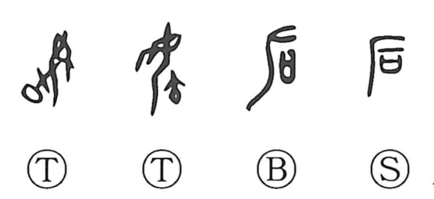

后

Kun: kisaki, nochi | On: kou, go
queen ・ empress ・ after ・ behind ・ back
Explanation
Shirakawa reads 后 as a compound graph combining the person element with an enclosing frame to show a ritual covenant casket set before a person. In structure and intent it parallels 君, and in early usage it designated the ruler’s consort—the queen or empress. In oracle-bone inscriptions, however, the graph appears as the figure of a woman giving birth, a form akin to 毓 “to bring up, to nurture.” In such texts, expressions like 后(後)祖丁 are written as 毓祖丁, indicating that 后 and 毓 functioned as the same sign there, and that 后 also served to write the sense later standardized as 後, “after.”